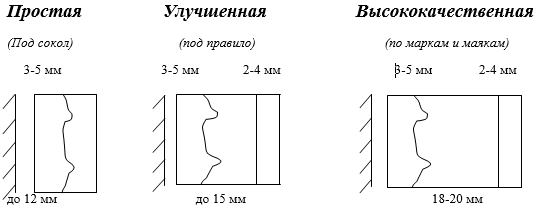
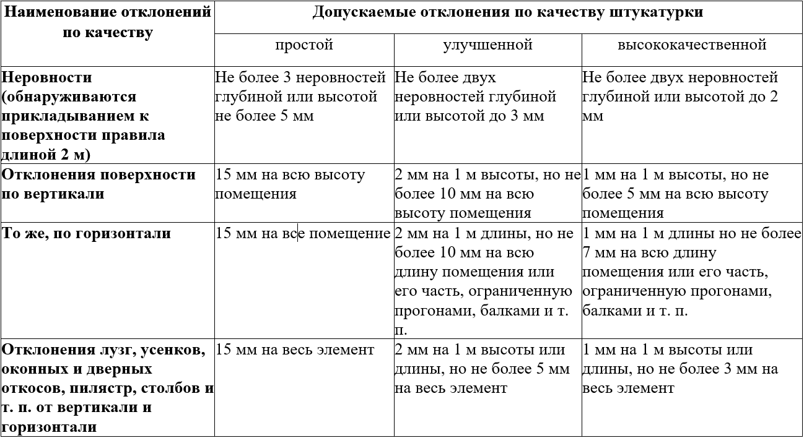

В зависимости от требований к качеству отделки обычная штукатурка бывает трех видов: простая, улучшенная и высококачественная.

Обрызг – это первый слой штукатурного намета толщиной 3-9 мм. Для обрызга идет жидкий сметанообразный раствор с подвижностью 10см. Толщина обрызга для кирпичных и бетонных поверхностей до 5 мм, для деревянных – до 9 мм. Обрызг обеспечивает сцепление последующих слоев с основанием.
Грунт – второй слой штукатурного намета. Подвижность раствора для грунта – 9 см. Грунт – это основной слой намета, он образует необходимую толщину штукатурки, выравнивая поверхность. Грунт можно при необходимости наносить в несколько слоев. Толщина каждого слоя не должна превышать 7 мм.
Накрывка – третий слой штукатурного намета толщиной 2-4 мм. Выполняется из сметанообразного раствораподвижностью 12 см. Накрывка выравнивает поверхность грунта, образуя гладкий слой раствора. Раствор для накрывки выполняется на мелком просеянном песке (сито 1,5х1,5 мм).
